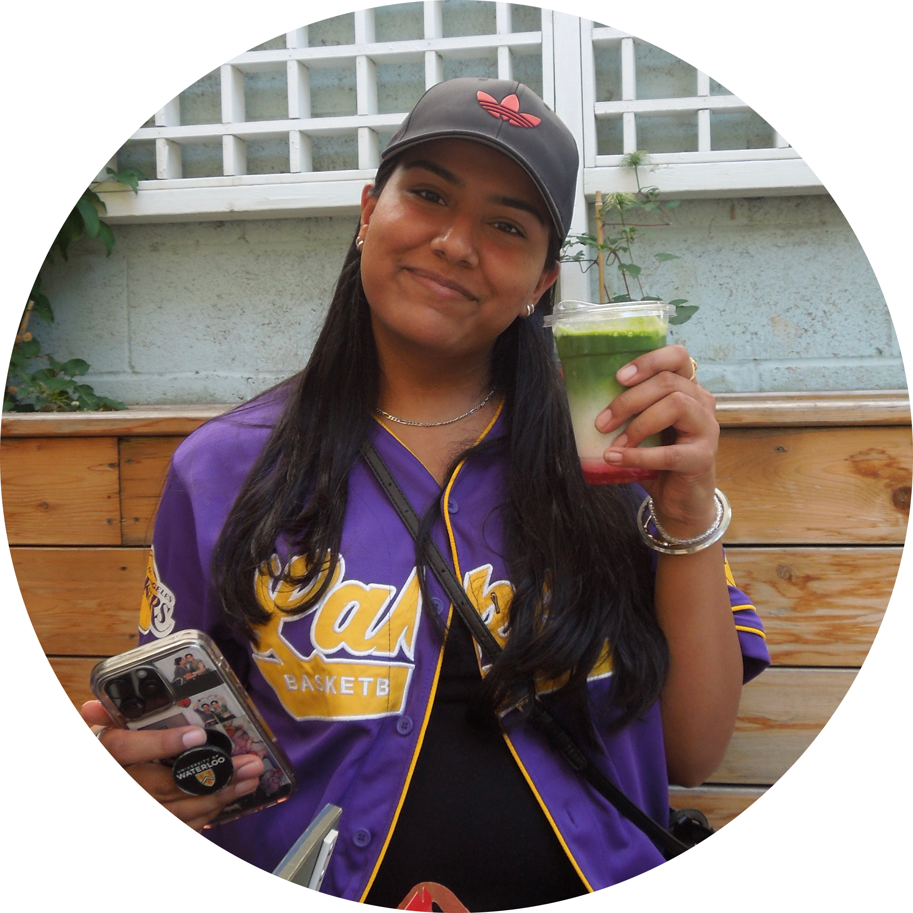
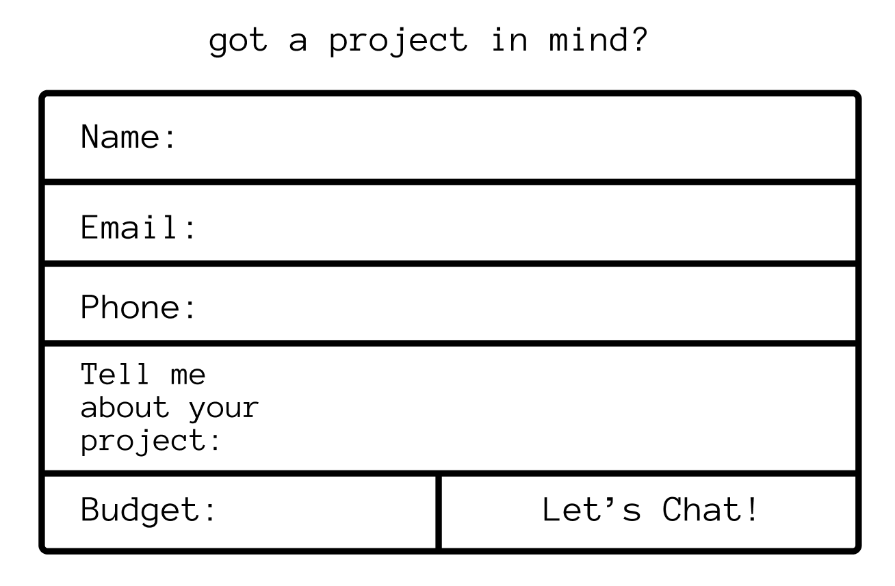

Digital design has always fascinated me because it combines creativity with technology, allowing me to bring ideas to life in interactive and innovative ways. I’ve loved art since I was young, always enjoying drawing, experimenting with colors, and creating visuals that express my imagination. Choosing digital design allows me to take that lifelong passion for art and apply it in a modern, technological context, exploring everything from user interfaces to visual storytelling. I was drawn to GBDA because it provides the perfect environment to develop these skills, offering both technical knowledge and creative freedom. The program encourages experimentation and problem-solving, which aligns with how I approach design, thinking critically while staying creatively inspired. Ultimately, digital design gives me the tools to turn my artistic ideas into functional and meaningful digital experiences.
I’m Tandeep, a student in the GBDA program with a focus on digital design. I have had a strong passion for art and creativity since a young age, constantly exploring different ways to express ideas visually through drawing, colors, and design. Over time, this passion evolved into an interest in digital media, where I can combine my artistic skills with technology to create interactive and engaging experiences. In my studies, I enjoy developing both the technical and conceptual aspects of design, from learning design software to understanding how visuals communicate ideas effectively. I’m particularly drawn to projects that challenge me to think critically while staying creatively inspired, whether that’s designing user interfaces, creating digital illustrations, or experimenting with multimedia. Ultimately, I aim to use my skills in digital design to craft meaningful and innovative experiences that connect with audiences in impactful ways.
